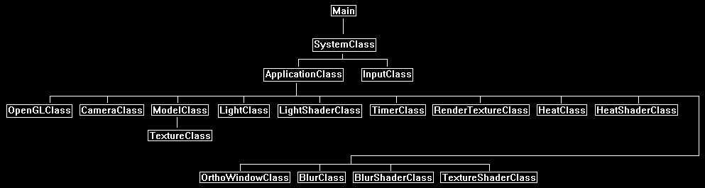

In this tutorial we will cover how to implement a heat shader using OpenGL 4.0, C++, and GLSL.
The code in this tutorial will be built on the code and knowledge from the glow mapping tutorial 46 and the fire tutorial 33.
To create a heat effect, we will use a combination of 2D post processing techniques we have already discussed.
First, we will apply a glow to the area we want the heat effect to operate on.
And after that we will use distortion to create a heat shimmering effect.
Let's look at the exact steps with an example.
First, we will render our 3D scene to a texture.
Here we will be rendering a yellow textured 3D sphere.

Next, we will render out a heat map.
This is the section of the scene we want to apply the heat effect to.
This works the same as the glow map did in the glow tutorial.
For this tutorial I will render out the entire sphere since I want to do the heat effect on the entire scene.
But do note you can just render a black and white result and color it differently.
Or you render out just a couple objects that you want heat on.

The next step we perform a regular blur on the rendered-out heat map.

Now that we have our heat map, we will also need our noise texture for the distortion part of the effect.
A plasma like texture is usually used to most closely resemble how moving heat looks.
For this tutorial we will use the following noise texture:

With our heat map and our noise texture we will combine them in the HLSL shader to produce a shimmering and moving heat effect.
We will use the frame time and multiple scrolling UV coordinates to simulate the movement of heat in an upwards direction similar to the fire rendering tutorial.
With this controlled distortion effect, we will have an animated heat map that now looks like the following:

To complete the heat effect, I will simply add the final distorted heat map back on top of the regular scene to give a very strong heat effect that also intensifies all of the colors.
There are also other options such as modifying the final scene using the heat map and a lerp function.
But it is up to you how to use the distorted heat map to complete your scene with a heat effect.

Framework
For the framework we have all the classes we need to render out the sphere with a regular light shader.
We also have all the classes to perform a blur.
For new classes we have the HeatClass and the HeatShaderClass.

We will start the code section of the tutorial by looking at the GLSL heat shader.
Heat.vs
The heat vertex shader is exactly the same as the fire vertex shader.
It works by using the frame time, scroll speeds, and scales to take the input texture coordinates and create three different scrolling and
scaled output texture coordinates for the pixel shader.
////////////////////////////////////////////////////////////////////////////////
// Filename: heat.vs
////////////////////////////////////////////////////////////////////////////////
#version 400
/////////////////////
// INPUT VARIABLES //
/////////////////////
in vec3 inputPosition;
in vec2 inputTexCoord;
//////////////////////
// OUTPUT VARIABLES //
//////////////////////
out vec2 texCoord;
out vec2 texCoords1;
out vec2 texCoords2;
out vec2 texCoords3;
///////////////////////
// UNIFORM VARIABLES //
///////////////////////
uniform mat4 worldMatrix;
uniform mat4 viewMatrix;
uniform mat4 projectionMatrix;
uniform float frameTime;
uniform vec3 scrollSpeeds;
uniform vec3 scales;
////////////////////////////////////////////////////////////////////////////////
// Vertex Shader
////////////////////////////////////////////////////////////////////////////////
void main(void)
{
vec4 worldPosition;
// Calculate the position of the vertex against the world, view, and projection matrices.
gl_Position = vec4(inputPosition, 1.0f) * worldMatrix;
gl_Position = gl_Position * viewMatrix;
gl_Position = gl_Position * projectionMatrix;
// Store the texture coordinates for the pixel shader.
texCoord = inputTexCoord;
// Compute texture coordinates for first noise texture using the first scale and upward scrolling speed values.
texCoords1 = (inputTexCoord * scales.x);
texCoords1.y = texCoords1.y + (frameTime * scrollSpeeds.x);
// Compute texture coordinates for second noise texture using the second scale and upward scrolling speed values.
texCoords2 = (inputTexCoord * scales.y);
texCoords2.y = texCoords2.y + (frameTime * scrollSpeeds.y);
// Compute texture coordinates for third noise texture using the third scale and upward scrolling speed values.
texCoords3 = (inputTexCoord * scales.z);
texCoords3.y = texCoords3.y + (frameTime * scrollSpeeds.z);
}
Heat.ps
////////////////////////////////////////////////////////////////////////////////
// Filename: heat.ps
////////////////////////////////////////////////////////////////////////////////
#version 400
/////////////////////
// INPUT VARIABLES //
/////////////////////
in vec2 texCoord;
Here we have our three differently scaled texture coordinates that come as input from the vertex shader.
in vec2 texCoords1;
in vec2 texCoords2;
in vec2 texCoords3;
//////////////////////
// OUTPUT VARIABLES //
//////////////////////
out vec4 outputColor;
///////////////////////
// UNIFORM VARIABLES //
///////////////////////
We have three textures as input. The color texture, the glow texture (which is our blurred heat map), and the noise texture.
uniform sampler2D colorTexture;
uniform sampler2D glowTexture;
uniform sampler2D noiseTexture;
The emissiveMultiplier variable controls how strong the emissive glow is.
uniform float emissiveMultiplier;
These are the three regular noise distortion vectors.
uniform vec2 distortion1;
uniform vec2 distortion2;
uniform vec2 distortion3;
////////////////////////////////////////////////////////////////////////////////
// Pixel Shader
////////////////////////////////////////////////////////////////////////////////
void main(void)
{
vec4 noise1, noise2, noise3;
vec4 finalNoise;
float heatOffsetBias;
vec2 heatOffset;
vec4 glowMap;
vec4 textureColor;
vec4 color;
Begin the shader by using the same code from the fire shader where we sample the same noise texture with three different coordinates.
We then apply the distortion values and create a final noise result.
// Sample the same noise texture using the three different texture coordinates to get three different noise scales.
noise1 = texture(noiseTexture, texCoords1);
noise2 = texture(noiseTexture, texCoords2);
noise3 = texture(noiseTexture, texCoords3);
// Move the noise from the (0, 1) range to the (-1, +1) range.
noise1 = (noise1 - 0.5f) * 2.0f;
noise2 = (noise2 - 0.5f) * 2.0f;
noise3 = (noise3 - 0.5f) * 2.0f;
// Distort the three noise x and y coordinates by the three different distortion x and y values.
noise1.xy = noise1.xy * distortion1.xy;
noise2.xy = noise2.xy * distortion2.xy;
noise3.xy = noise3.xy * distortion3.xy;
// Combine all three distorted noise results into a single noise result.
finalNoise = noise1 + noise2 + noise3;
We will now set our heat bias and then calculate the offset coordinates for sampling the heat texture using the distorted noise coordinates we just calculated above.
// Set the heat offset bias to modify the heat distortion to be less crazy.
heatOffsetBias = 0.001f;
// Create the heat offset texture coords for sampling to create the heat shimmer effect.
heatOffset.x = ((finalNoise.x * 2.0f) - 1.0f) * heatOffsetBias;
heatOffset.y = ((finalNoise.y * 2.0f) - 1.0f) * heatOffsetBias;
With the distorted coordinates we then sample the blurred heat texture (glowMap) and we have our heat shimmering effect.
// Sample the glow texture using the heat offset for texture coords.
heatOffset = heatOffset + texCoord;
glowMap = texture(glowTexture, heatOffset);
Sample the color texture and then combine the texture color and the distorted heat texture using the emissive multiplier to control the strength of the heat shimmering effect.
// Sample the pixel color from the texture using the sampler at this texture coordinate location.
textureColor = texture(colorTexture, texCoord);
// Add the texture color to the glow color multiplied by the glow stength.
color = clamp(textureColor + (glowMap * emissiveMultiplier), 0.0f, 1.0f);
outputColor = color;
}
Heatshaderclass.h
The heat shader class will contain elements from both the fire shader and glow shader classes.
////////////////////////////////////////////////////////////////////////////////
// Filename: heatshaderclass.h
////////////////////////////////////////////////////////////////////////////////
#ifndef _HEATSHADERCLASS_H_
#define _HEATSHADERCLASS_H_
//////////////
// INCLUDES //
//////////////
#include <iostream>
using namespace std;
///////////////////////
// MY CLASS INCLUDES //
///////////////////////
#include "openglclass.h"
////////////////////////////////////////////////////////////////////////////////
// Class name: HeatShaderClass
////////////////////////////////////////////////////////////////////////////////
class HeatShaderClass
{
public:
HeatShaderClass();
HeatShaderClass(const HeatShaderClass&);
~HeatShaderClass();
bool Initialize(OpenGLClass*);
void Shutdown();
bool SetShaderParameters(float*, float*, float*, float, float, float*, float*, float*, float*, float*);
private:
bool InitializeShader(char*, char*);
void ShutdownShader();
char* LoadShaderSourceFile(char*);
void OutputShaderErrorMessage(unsigned int, char*);
void OutputLinkerErrorMessage(unsigned int);
private:
OpenGLClass* m_OpenGLPtr;
unsigned int m_vertexShader;
unsigned int m_fragmentShader;
unsigned int m_shaderProgram;
};
#endif
Heatshaderclass.cpp
////////////////////////////////////////////////////////////////////////////////
// Filename: heatshaderclass.cpp
////////////////////////////////////////////////////////////////////////////////
#include "heatshaderclass.h"
HeatShaderClass::HeatShaderClass()
{
m_OpenGLPtr = 0;
}
HeatShaderClass::HeatShaderClass(const HeatShaderClass& other)
{
}
HeatShaderClass::~HeatShaderClass()
{
}
bool HeatShaderClass::Initialize(OpenGLClass* OpenGL)
{
char vsFilename[128];
char psFilename[128];
bool result;
// Store the pointer to the OpenGL object.
m_OpenGLPtr = OpenGL;
// Set the location and names of the shader files.
strcpy(vsFilename, "../Engine/heat.vs");
strcpy(psFilename, "../Engine/heat.ps");
// Initialize the vertex and pixel shaders.
result = InitializeShader(vsFilename, psFilename);
if(!result)
{
return false;
}
return true;
}
void HeatShaderClass::Shutdown()
{
// Shutdown the shader.
ShutdownShader();
// Release the pointer to the OpenGL object.
m_OpenGLPtr = 0;
return;
}
bool HeatShaderClass::InitializeShader(char* vsFilename, char* fsFilename)
{
const char* vertexShaderBuffer;
const char* fragmentShaderBuffer;
int status;
// Load the vertex shader source file into a text buffer.
vertexShaderBuffer = LoadShaderSourceFile(vsFilename);
if(!vertexShaderBuffer)
{
return false;
}
// Load the fragment shader source file into a text buffer.
fragmentShaderBuffer = LoadShaderSourceFile(fsFilename);
if(!fragmentShaderBuffer)
{
return false;
}
// Create a vertex and fragment shader object.
m_vertexShader = m_OpenGLPtr->glCreateShader(GL_VERTEX_SHADER);
m_fragmentShader = m_OpenGLPtr->glCreateShader(GL_FRAGMENT_SHADER);
// Copy the shader source code strings into the vertex and fragment shader objects.
m_OpenGLPtr->glShaderSource(m_vertexShader, 1, &vertexShaderBuffer, NULL);
m_OpenGLPtr->glShaderSource(m_fragmentShader, 1, &fragmentShaderBuffer, NULL);
// Release the vertex and fragment shader buffers.
delete [] vertexShaderBuffer;
vertexShaderBuffer = 0;
delete [] fragmentShaderBuffer;
fragmentShaderBuffer = 0;
// Compile the shaders.
m_OpenGLPtr->glCompileShader(m_vertexShader);
m_OpenGLPtr->glCompileShader(m_fragmentShader);
// Check to see if the vertex shader compiled successfully.
m_OpenGLPtr->glGetShaderiv(m_vertexShader, GL_COMPILE_STATUS, &status);
if(status != 1)
{
// If it did not compile then write the syntax error message out to a text file for review.
OutputShaderErrorMessage(m_vertexShader, vsFilename);
return false;
}
// Check to see if the fragment shader compiled successfully.
m_OpenGLPtr->glGetShaderiv(m_fragmentShader, GL_COMPILE_STATUS, &status);
if(status != 1)
{
// If it did not compile then write the syntax error message out to a text file for review.
OutputShaderErrorMessage(m_fragmentShader, fsFilename);
return false;
}
// Create a shader program object.
m_shaderProgram = m_OpenGLPtr->glCreateProgram();
// Attach the vertex and fragment shader to the program object.
m_OpenGLPtr->glAttachShader(m_shaderProgram, m_vertexShader);
m_OpenGLPtr->glAttachShader(m_shaderProgram, m_fragmentShader);
// Bind the shader input variables.
m_OpenGLPtr->glBindAttribLocation(m_shaderProgram, 0, "inputPosition");
m_OpenGLPtr->glBindAttribLocation(m_shaderProgram, 1, "inputTexCoord");
// Link the shader program.
m_OpenGLPtr->glLinkProgram(m_shaderProgram);
// Check the status of the link.
m_OpenGLPtr->glGetProgramiv(m_shaderProgram, GL_LINK_STATUS, &status);
if(status != 1)
{
// If it did not link then write the syntax error message out to a text file for review.
OutputLinkerErrorMessage(m_shaderProgram);
return false;
}
return true;
}
void HeatShaderClass::ShutdownShader()
{
// Detach the vertex and fragment shaders from the program.
m_OpenGLPtr->glDetachShader(m_shaderProgram, m_vertexShader);
m_OpenGLPtr->glDetachShader(m_shaderProgram, m_fragmentShader);
// Delete the vertex and fragment shaders.
m_OpenGLPtr->glDeleteShader(m_vertexShader);
m_OpenGLPtr->glDeleteShader(m_fragmentShader);
// Delete the shader program.
m_OpenGLPtr->glDeleteProgram(m_shaderProgram);
return;
}
char* HeatShaderClass::LoadShaderSourceFile(char* filename)
{
FILE* filePtr;
char* buffer;
long fileSize, count;
int error;
// Open the shader file for reading in text modee.
filePtr = fopen(filename, "r");
if(filePtr == NULL)
{
return 0;
}
// Go to the end of the file and get the size of the file.
fseek(filePtr, 0, SEEK_END);
fileSize = ftell(filePtr);
// Initialize the buffer to read the shader source file into, adding 1 for an extra null terminator.
buffer = new char[fileSize + 1];
// Return the file pointer back to the beginning of the file.
fseek(filePtr, 0, SEEK_SET);
// Read the shader text file into the buffer.
count = fread(buffer, 1, fileSize, filePtr);
if(count != fileSize)
{
return 0;
}
// Close the file.
error = fclose(filePtr);
if(error != 0)
{
return 0;
}
// Null terminate the buffer.
buffer[fileSize] = '\0';
return buffer;
}
void HeatShaderClass::OutputShaderErrorMessage(unsigned int shaderId, char* shaderFilename)
{
long count;
int logSize, error;
char* infoLog;
FILE* filePtr;
// Get the size of the string containing the information log for the failed shader compilation message.
m_OpenGLPtr->glGetShaderiv(shaderId, GL_INFO_LOG_LENGTH, &logSize);
// Increment the size by one to handle also the null terminator.
logSize++;
// Create a char buffer to hold the info log.
infoLog = new char[logSize];
// Now retrieve the info log.
m_OpenGLPtr->glGetShaderInfoLog(shaderId, logSize, NULL, infoLog);
// Open a text file to write the error message to.
filePtr = fopen("shader-error.txt", "w");
if(filePtr == NULL)
{
cout << "Error opening shader error message output file." << endl;
return;
}
// Write out the error message.
count = fwrite(infoLog, sizeof(char), logSize, filePtr);
if(count != logSize)
{
cout << "Error writing shader error message output file." << endl;
return;
}
// Close the file.
error = fclose(filePtr);
if(error != 0)
{
cout << "Error closing shader error message output file." << endl;
return;
}
// Notify the user to check the text file for compile errors.
cout << "Error compiling shader. Check shader-error.txt for error message. Shader filename: " << shaderFilename << endl;
return;
}
void HeatShaderClass::OutputLinkerErrorMessage(unsigned int programId)
{
long count;
FILE* filePtr;
int logSize, error;
char* infoLog;
// Get the size of the string containing the information log for the failed shader compilation message.
m_OpenGLPtr->glGetProgramiv(programId, GL_INFO_LOG_LENGTH, &logSize);
// Increment the size by one to handle also the null terminator.
logSize++;
// Create a char buffer to hold the info log.
infoLog = new char[logSize];
// Now retrieve the info log.
m_OpenGLPtr->glGetProgramInfoLog(programId, logSize, NULL, infoLog);
// Open a file to write the error message to.
filePtr = fopen("linker-error.txt", "w");
if(filePtr == NULL)
{
cout << "Error opening linker error message output file." << endl;
return;
}
// Write out the error message.
count = fwrite(infoLog, sizeof(char), logSize, filePtr);
if(count != logSize)
{
cout << "Error writing linker error message output file." << endl;
return;
}
// Close the file.
error = fclose(filePtr);
if(error != 0)
{
cout << "Error closing linker error message output file." << endl;
return;
}
// Pop a message up on the screen to notify the user to check the text file for linker errors.
cout << "Error linking shader program. Check linker-error.txt for message." << endl;
return;
}
bool HeatShaderClass::SetShaderParameters(float* worldMatrix, float* viewMatrix, float* projectionMatrix, float emissiveMultiplier, float frameTime,
float* scrollSpeeds, float* scales, float* distortion1, float* distortion2, float* distortion3)
{
float tpWorldMatrix[16], tpViewMatrix[16], tpProjectionMatrix[16];
int location;
// Transpose the matrices to prepare them for the shader.
m_OpenGLPtr->MatrixTranspose(tpWorldMatrix, worldMatrix);
m_OpenGLPtr->MatrixTranspose(tpViewMatrix, viewMatrix);
m_OpenGLPtr->MatrixTranspose(tpProjectionMatrix, projectionMatrix);
// Install the shader program as part of the current rendering state.
m_OpenGLPtr->glUseProgram(m_shaderProgram);
// Set the world matrix in the vertex shader.
location = m_OpenGLPtr->glGetUniformLocation(m_shaderProgram, "worldMatrix");
if(location == -1)
{
cout << "World matrix not set." << endl;
}
m_OpenGLPtr ->glUniformMatrix4fv(location, 1, false, tpWorldMatrix);
// Set the view matrix in the vertex shader.
location = m_OpenGLPtr->glGetUniformLocation(m_shaderProgram, "viewMatrix");
if(location == -1)
{
cout << "View matrix not set." << endl;
}
m_OpenGLPtr->glUniformMatrix4fv(location, 1, false, tpViewMatrix);
// Set the projection matrix in the vertex shader.
location = m_OpenGLPtr->glGetUniformLocation(m_shaderProgram, "projectionMatrix");
if(location == -1)
{
cout << "Projection matrix not set." << endl;
}
m_OpenGLPtr->glUniformMatrix4fv(location, 1, false, tpProjectionMatrix);
Set the noise frame time for animating the effect.
// Set the frame time in the vertex shader.
location = m_OpenGLPtr->glGetUniformLocation(m_shaderProgram, "frameTime");
if(location == -1)
{
cout << "Frame time not set." << endl;
}
m_OpenGLPtr->glUniform1f(location, frameTime);
Set our scroll speeds and scales similar to the fire effect.
// Set the scroll speeds in the vertex shader.
location = m_OpenGLPtr->glGetUniformLocation(m_shaderProgram, "scrollSpeeds");
if(location == -1)
{
cout << "Scroll speeds not set." << endl;
}
m_OpenGLPtr->glUniform3fv(location, 1, scrollSpeeds);
// Set the scales in the vertex shader.
location = m_OpenGLPtr->glGetUniformLocation(m_shaderProgram, "scales");
if(location == -1)
{
cout << "Scales not set." << endl;
}
m_OpenGLPtr->glUniform3fv(location, 1, scales);
Set all the texture resources in the pixel shader.
// Set the color texture in the pixel shader to use the data from the first texture unit.
location = m_OpenGLPtr->glGetUniformLocation(m_shaderProgram, "colorTexture");
if(location == -1)
{
cout << "Color texture not set." << endl;
}
m_OpenGLPtr->glUniform1i(location, 0);
// Set the glow texture in the pixel shader to use the data from the second texture unit.
location = m_OpenGLPtr->glGetUniformLocation(m_shaderProgram, "glowTexture");
if(location == -1)
{
cout << "Glow texture not set." << endl;
}
m_OpenGLPtr->glUniform1i(location, 1);
// Set the noise texture in the pixel shader to use the data from the third texture unit.
location = m_OpenGLPtr->glGetUniformLocation(m_shaderProgram, "noiseTexture");
if(location == -1)
{
cout << "Noise texture not set." << endl;
}
m_OpenGLPtr->glUniform1i(location, 2);
Set the emissive multiplier for controlling the glow strength.
// Set the emissive multiplier in the pixel shader.
location = m_OpenGLPtr->glGetUniformLocation(m_shaderProgram, "emissiveMultiplier");
if(location == -1)
{
cout << "Emissive multiplier not set." << endl;
}
m_OpenGLPtr->glUniform1f(location, emissiveMultiplier);
Set the three distortion vectors in the pixel shader.
// Set the first distortion in the pixel shader.
location = m_OpenGLPtr->glGetUniformLocation(m_shaderProgram, "distortion1");
if(location == -1)
{
cout << "Distorion 1 not set." << endl;
}
m_OpenGLPtr->glUniform2fv(location, 1, distortion1);
// Set the second distortion in the pixel shader.
location = m_OpenGLPtr->glGetUniformLocation(m_shaderProgram, "distortion2");
if(location == -1)
{
cout << "Distorion 2 not set." << endl;
}
m_OpenGLPtr->glUniform2fv(location, 1, distortion2);
// Set the third distortion in the pixel shader.
location = m_OpenGLPtr->glGetUniformLocation(m_shaderProgram, "distortion3");
if(location == -1)
{
cout << "Distorion 3 not set." << endl;
}
m_OpenGLPtr->glUniform2fv(location, 1, distortion3);
return true;
}
Heatclass.h
The heat class is used for encapsulating all the heat related variables and textures in a single class.
It also does the frame processing each frame to update the time related variables.
////////////////////////////////////////////////////////////////////////////////
// Filename: heatclass.h
////////////////////////////////////////////////////////////////////////////////
#ifndef _HEATCLASS_H_
#define _HEATCLASS_H_
///////////////////////
// MY CLASS INCLUDES //
///////////////////////
#include "textureclass.h"
////////////////////////////////////////////////////////////////////////////////
// Class name: HeatClass
////////////////////////////////////////////////////////////////////////////////
class HeatClass
{
public:
HeatClass();
HeatClass(const HeatClass&);
~HeatClass();
bool Initialize(OpenGLClass*);
void Shutdown();
void Frame(float);
void SetTexture(OpenGLClass*, unsigned int);
void GetNoiseValues(float*, float*, float*, float*, float*, float&, float&);
private:
TextureClass* m_HeatNoiseTexture;
float m_scrollSpeeds[3], m_scales[3];
float m_distortion1[2], m_distortion2[2], m_distortion3[2];
float m_emissiveMultiplier, m_noiseFrameTime;
};
#endif
Heatclass.cpp
///////////////////////////////////////////////////////////////////////////////
// Filename: heatclass.cpp
///////////////////////////////////////////////////////////////////////////////
#include "heatclass.h"
HeatClass::HeatClass()
{
m_HeatNoiseTexture = 0;
}
HeatClass::HeatClass(const HeatClass& other)
{
}
HeatClass::~HeatClass()
{
}
bool HeatClass::Initialize(OpenGLClass* OpenGL)
{
char textureFilename[128];
bool result;
Load the heat noise texture.
// Create and initialize the heat noise texture object.
m_HeatNoiseTexture = new TextureClass;
strcpy(textureFilename, "../Engine/data/heatnoise01.tga");
result = m_HeatNoiseTexture->Initialize(OpenGL, textureFilename, true);
if(!result)
{
return false;
}
Set all the noise, distortion, and glow variables.
// Set the three scrolling speeds for the three different noise textures.
m_scrollSpeeds[0] = 1.3f;
m_scrollSpeeds[1] = 2.1f;
m_scrollSpeeds[2] = 2.3f;
// Set the three scales which will be used to create the three different noise octave textures.
m_scales[0] = 1.0f;
m_scales[1] = 2.0f;
m_scales[2] = 3.0f;
// Set the three different x and y distortion factors for the three different noise textures.
m_distortion1[0] = 0.1f;
m_distortion1[1] = 0.2f;
m_distortion2[0] = 0.1f;
m_distortion2[1] = 0.3f;
m_distortion3[0] = 0.1f;
m_distortion3[1] = 0.1f;
// Set the emissive multiplier.
m_emissiveMultiplier = 1.6f;
Initialize the noise frame time.
// Initialize the noise timing.
m_noiseFrameTime = 0.0f;
return true;
}
void HeatClass::Shutdown()
{
// Release the heat noise texture.
if(m_HeatNoiseTexture)
{
m_HeatNoiseTexture->Shutdown();
delete m_HeatNoiseTexture;
m_HeatNoiseTexture = 0;
}
return;
}
Each frame this function needs to be called by the main program to update the heat effect timing.
void HeatClass::Frame(float frameTime)
{
// Increment the frame time counter.
m_noiseFrameTime += (frameTime * 0.075f);
if(m_noiseFrameTime > 1000.0f)
{
m_noiseFrameTime = 0.0f;
}
return;
}
void HeatClass::SetTexture(OpenGLClass* OpenGL, unsigned int textureUnit)
{
m_HeatNoiseTexture->SetTexture(OpenGL, textureUnit);
return;
}
void HeatClass::GetNoiseValues(float* scrollSpeeds, float* scales, float* distortion1, float* distortion2, float* distortion3,
float& emissiveMultiplier, float& noiseFrameTime)
{
scrollSpeeds[0] = m_scrollSpeeds[0];
scrollSpeeds[1] = m_scrollSpeeds[1];
scrollSpeeds[2] = m_scrollSpeeds[2];
scales[0] = m_scales[0];
scales[1] = m_scales[1];
scales[2] = m_scales[2];
distortion1[0] = m_distortion1[0];
distortion1[1] = m_distortion1[1];
distortion2[0] = m_distortion2[0];
distortion2[1] = m_distortion2[1];
distortion3[0] = m_distortion3[0];
distortion3[1] = m_distortion3[1];
emissiveMultiplier = m_emissiveMultiplier;
noiseFrameTime = m_noiseFrameTime;
return;
}
Applicationclass.h
We will include headers and class objects for the regular rendering, the blur operation, and the heat shader effect.
////////////////////////////////////////////////////////////////////////////////
// Filename: applicationclass.h
////////////////////////////////////////////////////////////////////////////////
#ifndef _APPLICATIONCLASS_H_
#define _APPLICATIONCLASS_H_
/////////////
// GLOBALS //
/////////////
const bool FULL_SCREEN = false;
const bool VSYNC_ENABLED = true;
const float SCREEN_NEAR = 0.3f;
const float SCREEN_DEPTH = 1000.0f;
///////////////////////
// MY CLASS INCLUDES //
///////////////////////
#include "openglclass.h"
#include "inputclass.h"
#include "timerclass.h"
#include "cameraclass.h"
#include "modelclass.h"
#include "lightclass.h"
#include "orthowindowclass.h"
#include "rendertextureclass.h"
#include "blurclass.h"
#include "lightshaderclass.h"
#include "heatclass.h"
#include "heatshaderclass.h"
////////////////////////////////////////////////////////////////////////////////
// Class Name: ApplicationClass
////////////////////////////////////////////////////////////////////////////////
class ApplicationClass
{
public:
ApplicationClass();
ApplicationClass(const ApplicationClass&);
~ApplicationClass();
bool Initialize(Display*, Window, int, int);
void Shutdown();
bool Frame(InputClass*);
private:
bool RenderSceneToTexture();
bool RenderHeatToTexture();
bool Render();
private:
OpenGLClass* m_OpenGL;
TimerClass* m_Timer;
CameraClass* m_Camera;
ModelClass* m_Model;
LightClass* m_Light;
LightShaderClass* m_LightShader;
RenderTextureClass* m_RenderTexture;
OrthoWindowClass* m_FullScreenWindow;
TextureShaderClass* m_TextureShader;
BlurShaderClass* m_BlurShader;
BlurClass* m_Blur;
HeatClass* m_Heat;
HeatShaderClass* m_HeatShader;
RenderTextureClass* m_HeatTexture;
};
#endif
Applicationclass.cpp
////////////////////////////////////////////////////////////////////////////////
// Filename: applicationclass.cpp
////////////////////////////////////////////////////////////////////////////////
#include "applicationclass.h"
ApplicationClass::ApplicationClass()
{
m_OpenGL = 0;
m_Timer = 0;
m_Camera = 0;
m_Model = 0;
m_Light = 0;
m_LightShader = 0;
m_RenderTexture = 0;
m_FullScreenWindow = 0;
m_TextureShader = 0;
m_BlurShader = 0;
m_Blur = 0;
m_Heat = 0;
m_HeatShader = 0;
m_HeatTexture = 0;
}
ApplicationClass::ApplicationClass(const ApplicationClass& other)
{
}
ApplicationClass::~ApplicationClass()
{
}
bool ApplicationClass::Initialize(Display* display, Window win, int screenWidth, int screenHeight)
{
char modelFilename[128], diffuseFilename[128];
int downSampleWidth, downSampleHeight;
bool result;
// Create and initialize the OpenGL object.
m_OpenGL = new OpenGLClass;
result = m_OpenGL->Initialize(display, win, screenWidth, screenHeight, SCREEN_NEAR, SCREEN_DEPTH, VSYNC_ENABLED);
if(!result)
{
cout << "Error: Could not initialize the OpenGL object." << endl;
return false;
}
We will need a timer for the heat effect.
// Create and initialize the timer object.
m_Timer = new TimerClass;
m_Timer->Initialize();
// Create and initialize the camera object.
m_Camera = new CameraClass;
m_Camera->SetPosition(0.0f, 0.0f, -10.0f);
m_Camera->Render();
m_Camera->RenderBaseViewMatrix();
We will load a yellow sphere to demo the heat effect with.
// Create and initialize the sphere model object.
m_Model = new ModelClass;
strcpy(modelFilename, "../Engine/data/sphere.txt");
strcpy(diffuseFilename, "../Engine/data/yellowcolor01.tga");
result = m_Model->Initialize(m_OpenGL, modelFilename, diffuseFilename, true, NULL, false, NULL, false);
if(!result)
{
cout << "Error: Could not initialize the model object." << endl;
return false;
}
We will render the sphere using a regular light and light shader.
// Create and initialize the light object.
m_Light = new LightClass;
m_Light->SetAmbientLight(0.15f, 0.15f, 0.15f, 1.0f);
m_Light->SetDiffuseColor(1.0f, 1.0f, 1.0f, 1.0f);
m_Light->SetDirection(0.0f, 0.0f, 1.0f);
// Create and initialize the light shader object.
m_LightShader = new LightShaderClass;
result = m_LightShader->Initialize(m_OpenGL);
if(!result)
{
cout << "Error: Could not initialize the light shader object." << endl;
return false;
}
Load all the blur related rendering objects.
// Create and initialize the render to texture object.
m_RenderTexture = new RenderTextureClass;
result = m_RenderTexture->Initialize(m_OpenGL, screenWidth, screenHeight, SCREEN_NEAR, SCREEN_DEPTH, 0);
if(!result)
{
cout << "Error: Could not initialize the render texture object." << endl;
return false;
}
// Create and initialize the full screen ortho window object.
m_FullScreenWindow = new OrthoWindowClass;
result = m_FullScreenWindow->Initialize(m_OpenGL, screenWidth, screenHeight);
if(!result)
{
cout << "Error: Could not initialize the full screen window object." << endl;
return false;
}
// Create and initialize the texture shader object.
m_TextureShader = new TextureShaderClass;
result = m_TextureShader->Initialize(m_OpenGL);
if(!result)
{
cout << "Error: Could not initialize the texture shader object." << endl;
return false;
}
// Create and initialize the blur shader object.
m_BlurShader = new BlurShaderClass;
result = m_BlurShader->Initialize(m_OpenGL);
if(!result)
{
cout << "Error: Could not initialize the blur shader object." << endl;
return false;
}
// Set the size to sample down to.
downSampleWidth = screenWidth / 2;
downSampleHeight = screenHeight / 2;
// Create and initialize the blur object.
m_Blur = new BlurClass;
result = m_Blur->Initialize(m_OpenGL, downSampleWidth, downSampleHeight, SCREEN_NEAR, SCREEN_DEPTH, screenWidth, screenHeight);
if(!result)
{
cout << "Error: Could not initialize the blur object." << endl;
return false;
}
Create the new heat class object which contains all the variables and textures used for manipulating the look of the heat.
// Create and initialize the heat object.
m_Heat = new HeatClass;
result = m_Heat->Initialize(m_OpenGL);
if(!result)
{
cout << "Error: Could not initialize the heat object." << endl;
return false;
}
Load the new heat shader here.
// Create the heat shader object.
m_HeatShader = new HeatShaderClass;
result = m_HeatShader->Initialize(m_OpenGL);
if(!result)
{
cout << "Error: Could not initialize the heat shader object." << endl;
return false;
}
We will need a render texture for rendering the heat map to so it can be blurred and then sent into the heat shader after to complete the heat effect.
// Create and initialize the heat render to texture object.
m_HeatTexture = new RenderTextureClass;
result = m_HeatTexture->Initialize(m_OpenGL, screenWidth, screenHeight, SCREEN_NEAR, SCREEN_DEPTH, 0);
if(!result)
{
cout << "Error: Could not initialize the heat render texture object." << endl;
return false;
}
return true;
}
void ApplicationClass::Shutdown()
{
// Release the heat render texture object.
if(m_HeatTexture)
{
m_HeatTexture->Shutdown();
delete m_HeatTexture;
m_HeatTexture = 0;
}
// Release the heat shader object.
if(m_HeatShader)
{
m_HeatShader->Shutdown();
delete m_HeatShader;
m_HeatShader = 0;
}
// Release the heat object.
if(m_Heat)
{
m_Heat->Shutdown();
delete m_Heat;
m_Heat = 0;
}
// Release the blur object.
if(m_Blur)
{
m_Blur->Shutdown();
delete m_Blur;
m_Blur = 0;
}
// Release the blur shader object.
if(m_BlurShader)
{
m_BlurShader->Shutdown();
delete m_BlurShader;
m_BlurShader = 0;
}
// Release the texture shader object.
if(m_TextureShader)
{
m_TextureShader->Shutdown();
delete m_TextureShader;
m_TextureShader = 0;
}
// Release the full screen ortho window object.
if(m_FullScreenWindow)
{
m_FullScreenWindow->Shutdown();
delete m_FullScreenWindow;
m_FullScreenWindow = 0;
}
// Release the render texture object.
if(m_RenderTexture)
{
m_RenderTexture->Shutdown();
delete m_RenderTexture;
m_RenderTexture = 0;
}
// Release the light shader object.
if(m_LightShader)
{
m_LightShader->Shutdown();
delete m_LightShader;
m_LightShader = 0;
}
// Release the light object.
if(m_Light)
{
delete m_Light;
m_Light = 0;
}
// Release the model object.
if(m_Model)
{
m_Model->Shutdown();
delete m_Model;
m_Model = 0;
}
// Release the camera object.
if(m_Camera)
{
delete m_Camera;
m_Camera = 0;
}
// Release the timer object.
if(m_Timer)
{
delete m_Timer;
m_Timer = 0;
}
// Release the OpenGL object.
if(m_OpenGL)
{
m_OpenGL->Shutdown();
delete m_OpenGL;
m_OpenGL = 0;
}
return;
}
bool ApplicationClass::Frame(InputClass* Input)
{
float frameTime;
bool result;
// Check if the escape key has been pressed, if so quit.
if(Input->IsEscapePressed() == true)
{
return false;
}
// Update the system stats.
m_Timer->Frame();
frameTime = m_Timer->GetTime();
Each frame we need to call the frame function for the heat object to update its timer.
// Do the engine heat frame processing.
m_Heat->Frame(frameTime);
So, for the heat effect it will work similar to glow shading.
We first render our regular scene to a texture.
Secondly, we then regular the heat maps to their own render texture.
For the third step we will blur the heat maps.
And then finally we use the regular scene render texture and the blurred heat map to render out the completed heat effect.
// Render the regular scene to a texture.
result = RenderSceneToTexture();
if(!result)
{
return false;
}
// Render the heat map to a texture.
result = RenderHeatToTexture();
if(!result)
{
return false;
}
// Use the blur object to blur the heat map texture.
result = m_Blur->BlurTexture(m_HeatTexture, m_OpenGL, m_Camera, m_TextureShader, m_BlurShader);
if(!result)
{
return false;
}
// Render the graphics scene.
result = Render();
if(!result)
{
return false;
}
return true;
}
We will render the yellow sphere with the light shader to a render texture.
I set the background to grey so that it is easier to see the heat effect when it is applied to something other than black.
bool ApplicationClass::RenderSceneToTexture()
{
float worldMatrix[16], viewMatrix[16], projectionMatrix[16];
float diffuseLightColor[4], lightDirection[3], ambientLight[4];
bool result;
// Set the render target to be the render to texture. Also clear the render to texture to grey.
m_RenderTexture->SetRenderTarget();
m_RenderTexture->ClearRenderTarget(0.25f, 0.25f, 0.25f, 1.0f);
// Get the world, view, and projection matrices from the camera and d3d objects.
m_OpenGL->GetWorldMatrix(worldMatrix);
m_Camera->GetViewMatrix(viewMatrix);
m_OpenGL->GetProjectionMatrix(projectionMatrix);
// Get the light properties.
m_Light->GetDirection(lightDirection);
m_Light->GetDiffuseColor(diffuseLightColor);
m_Light->GetAmbientLight(ambientLight);
// Render the sphere using the light shader.
result = m_LightShader->SetShaderParameters(worldMatrix, viewMatrix, projectionMatrix, lightDirection, diffuseLightColor, ambientLight);
if(!result)
{
return false;
}
m_Model->SetTexture1(0);
m_Model->Render();
// Reset the render target back to the original back buffer and not the render to texture anymore. Also reset the viewport back to the original.
m_OpenGL->SetBackBufferRenderTarget();
m_OpenGL->ResetViewport();
return true;
}
Now we render out the heat map to its own render texture.
bool ApplicationClass::RenderHeatToTexture()
{
float worldMatrix[16], viewMatrix[16], projectionMatrix[16];
float diffuseLightColor[4], lightDirection[3], ambientLight[4];
bool result;
// Set the render target to be the glow render texture and clear it.
m_HeatTexture->SetRenderTarget();
m_HeatTexture->ClearRenderTarget(0.0f, 0.0f, 0.0f, 1.0f);
// Get the world, view, and projection matrices from the camera and d3d objects.
m_OpenGL->GetWorldMatrix(worldMatrix);
m_Camera->GetViewMatrix(viewMatrix);
m_OpenGL->GetProjectionMatrix(projectionMatrix);
// Get the light properties.
m_Light->GetDirection(lightDirection);
m_Light->GetDiffuseColor(diffuseLightColor);
m_Light->GetAmbientLight(ambientLight);
// Render the sphere using the light shader.
result = m_LightShader->SetShaderParameters(worldMatrix, viewMatrix, projectionMatrix, lightDirection, diffuseLightColor, ambientLight);
if(!result)
{
return false;
}
m_Model->SetTexture1(0);
m_Model->Render();
// Reset the render target back to the original back buffer and not the render to texture anymore. Also reset the viewport back to the original.
m_OpenGL->SetBackBufferRenderTarget();
m_OpenGL->ResetViewport();
return true;
}
bool ApplicationClass::Render()
{
float worldMatrix[16], baseViewMatrix[16], orthoMatrix[16];
float scrollSpeeds[3], scales[3];
float distortion1[2], distortion2[2], distortion3[2];
float emessiveMultiplier, noiseFrameTime;
bool result;
Start by getting all the heat variables from the heat object,
// Get the heat noise values.
m_Heat->GetNoiseValues(scrollSpeeds, scales, distortion1, distortion2, distortion3, emessiveMultiplier, noiseFrameTime);
// Clear the buffers to begin the scene.
m_OpenGL->BeginScene(0.0f, 0.0f, 0.0f, 1.0f);
// Get the world, view, and ortho matrices from the camera and d3d objects.
m_OpenGL->GetWorldMatrix(worldMatrix);
m_Camera->GetBaseViewMatrix(baseViewMatrix);
m_OpenGL->GetOrthoMatrix(orthoMatrix);
The heat effect is a 2D post processing effect, and so we will set 2D rendering.
// Begin 2D rendering and turn off the Z buffer.
m_OpenGL->TurnZBufferOff();
Render the heat effect in 2D using the regular scene render texture and the blurred heat map texture.
We also use all the variables and noise texture from the heat object.
// Set the parameters for the heat shader.
result = m_HeatShader->SetShaderParameters(worldMatrix, baseViewMatrix, orthoMatrix, emessiveMultiplier, noiseFrameTime, scrollSpeeds, scales,
distortion1, distortion2, distortion3);
if(!result)
{
return false;
}
// Set the three textures for the heat pixel shader.
m_RenderTexture->SetTexture(0); // colorTexture - slot 0
m_HeatTexture->SetTexture(1); // glowTexture - slot 1
m_Heat->SetTexture(m_OpenGL, 2); // noiseTexture - slot 2
// Render the full screen ortho window using the heat shader and the rendered to texture resources.
m_FullScreenWindow->Render();
// Re-enable the Z buffer after 2D rendering complete.
m_OpenGL->TurnZBufferOn();
// Present the rendered scene to the screen.
m_OpenGL->EndScene();
return true;
}
Summary
We now have the ability to apply selective heat to any objects in our 3D scenes. Make sure to run the code to see the actual animated effect.
To Do Exercises
1. Compile and run the program to see the sphere rendered displaying heat effects. Press escape to quit.
2. Modify some of the variables in the heat object to see the changes to the heat effect.
3. Change the heat map to just black and white and then modify the heat map using gradient colors or different effects.
4. Try some different noise textures to see how they change the look of the heat shimmer.
Source Code
Source Code and Data Files: gl4linuxtut53_src.tar.gz